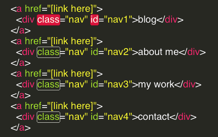

home makeover
Diving Into HTML & CSS: Exploring Classes and IDs
Sunday, March 29th, 2015
back to blog index
When you look at a modern web page, it often looks like one fluid, attractive image. In fact, what you see is a series of pieces, designed to fit together cohesively. Each piece has a purpose. From a developer’s perspective, these pieces are called “elements.” Many, many elements make up the web pages you typically see.
Web pages, at the lowest level, are not made up of what a designer creates visually. They are made of of blocks of code. The words and images on a web page is marked by a series of coded tags, and those tags create sections, which can be styled. An incredible amount of code goes into the complex, elegant web pages we’re used to seeing today. By marking certain sections of the code, multiple pieces can be styled together, and particular pieces can be styled alone.
To mark a similar set of elements for styling, pieces of code are assigned to a “class.” This allows the creator to change the appearance of several portions of the web page at once. Classes are often chosen because the included pieces have similar functionality, or they are intended to appear similarly in the browser. For example, we could place each piece of the sidebar in the same class, and make their links green. Many pieces of a web page can have the same class, and an element in the web page can even have multiple classes, allowing it to be styled in different ways.
To mark one particular element for styling, a piece of code can be given an “ID.” With an ID, even the smallest parts of a web page can be styled individually. For example, if we wanted to make the writer’s name at the end of an online letter appear more like a real signature, we could give that name an ID, and set the font to something with a cursive style. It is important to note that an ID can ONLY be used once.
Let’s look at an example. Consider the navigation bar on this website’s main page:

Each of the four tabs is a separate element, designed to bring the user new content. However, each of these elements is assigned to a class, in order to style them together. Instead of coding a section that sets each element’s size and font, the style for the entire class can be set, and each of the elements will use that styling.
However, the color of each element is different. To set a specific element’s color, it needs an ID. Thus, each of these elements also has an ID, that allows the site’s code to give it a unique shade of blue. And that brings us to an important point: an element can be assigned both a class and an ID, thus allowing it to be styled as part of a group and individually. Here is the code behind the structure of the nav bar. You can see that each is part of the “nav” class, but each also has a specific ID.
Classes and IDs clearly allow for well-structured site design, and they allow that design to be changed easily. Elements can be styled as a group when they’re a part of a class, and they can be styled uniquely when given an ID. This simple concept gives a page creator a great deal of power.
back to blog index